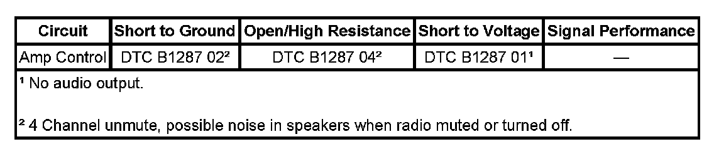

B1287
DTC B1287
DIAGNOSTIC INSTRUCTIONS
- Perform the Diagnostic System Check - Vehicle prior to using this diagnostic procedure. Initial Inspection and Diagnostic Overview
- Review Strategy Based Diagnosis for an overview of the diagnostic approach.
- Diagnostic Procedure Instructions provides an overview of each diagnostic category.
DTC DESCRIPTORS
DTC B1287 01
Amplifier Control Signal Circuit Short to Battery
DTC B1287 02
Amplifier Control Signal Circuit Short to Ground
DTC B1287 04
Amplifier Control Signal Circuit Open

DIAGNOSTIC FAULT INFORMATION
CIRCUIT/SYSTEM DESCRIPTION
The radio provides a remote amp mute output circuit to control overall muting of remote amplifiers (UQA without Y91 only). The amplifier receives pulse width modulated (PWM) signals on the circuit at varying duty cycle percentages for controlling the muted and unmuted functions of the amplifier. The RSA enable circuit in the radio enables the rear seat channel muting of the amplifier. A diagnostic sense circuit internal to the radio monitors the remote amp mute circuit for faults and sets the appropriate DTC when detected.
CONDITIONS FOR RUNNING THE DTC
The following are conditions that must be present in order for the radio to enable the diagnostics.
- The radio is in ACCESSORY, RUN, or RAP power mode.
- The system voltage is at least 9 volts and no more than 16 volts.
CONDITIONS FOR SETTING THE DTC
Circuit failure 400 ms after radio activates Remote Enable.
ACTION TAKEN WHEN THE DTC SETS
Radio sets the DTC and continues to output correct state.
CONDITIONS FOR CLEARING THE DTC
- The condition must be corrected.
- A history DTC clears after 100 malfunction-free ignition cycles.
- The radio receives the clear code command from the scan tool.
CIRCUIT/SYSTEM VERIFICATION
Verify the audio system performance by adjusting the fade and balance of the speaker outputs.
CIRCUIT/SYSTEM TESTING
1. Ignition OFF, test the amplifier control signal circuit for an open, a short to voltage, or a short to ground.
- If the circuit tests normal, replace the radio.
REPAIR INSTRUCTIONS
Perform the Diagnostic Repair Verification after completing the diagnostic procedure. Verification Tests
Control Module References for radio replacement, setup, and programming. Programming and Relearning